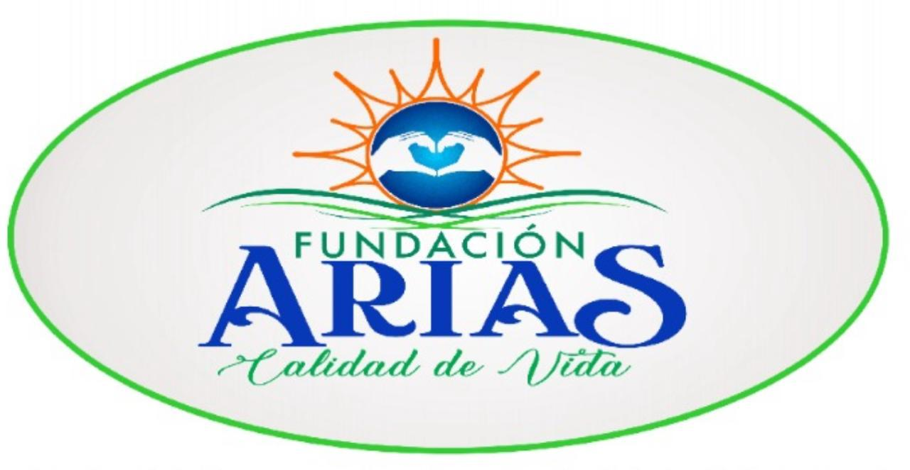
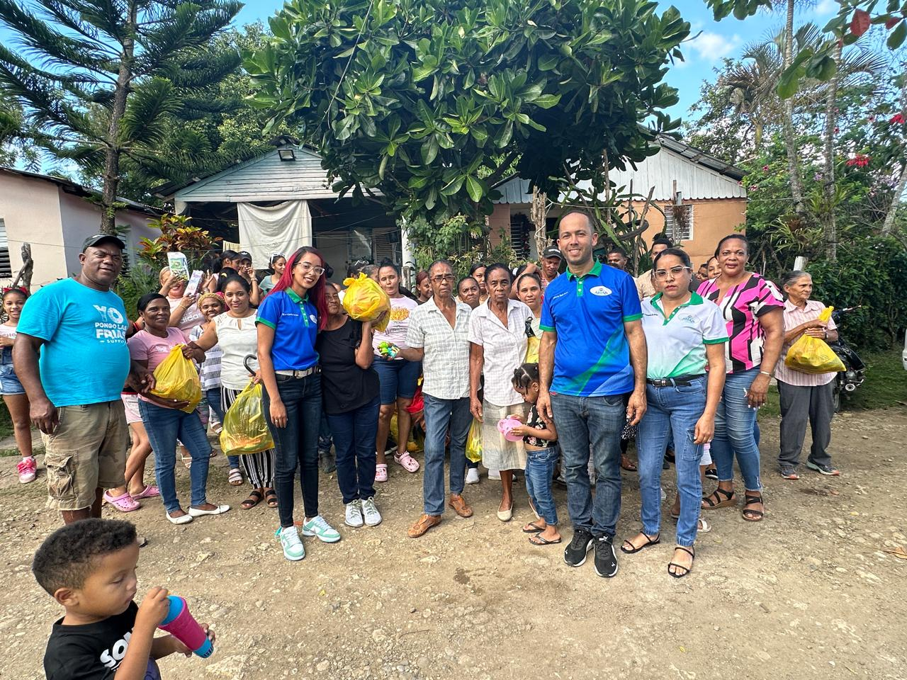
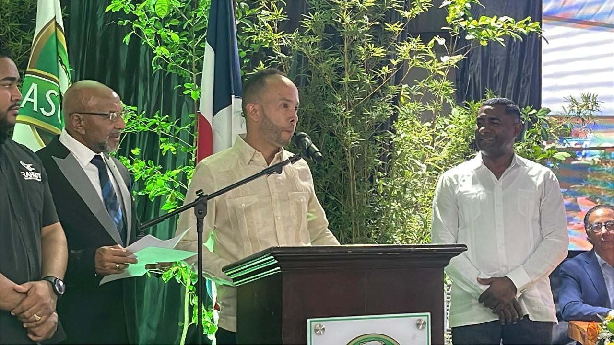
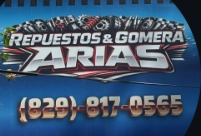
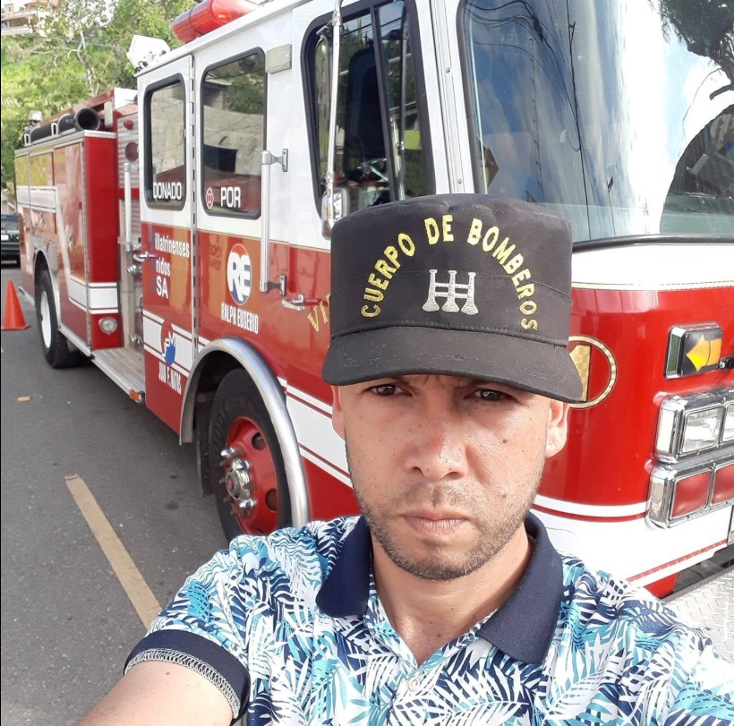
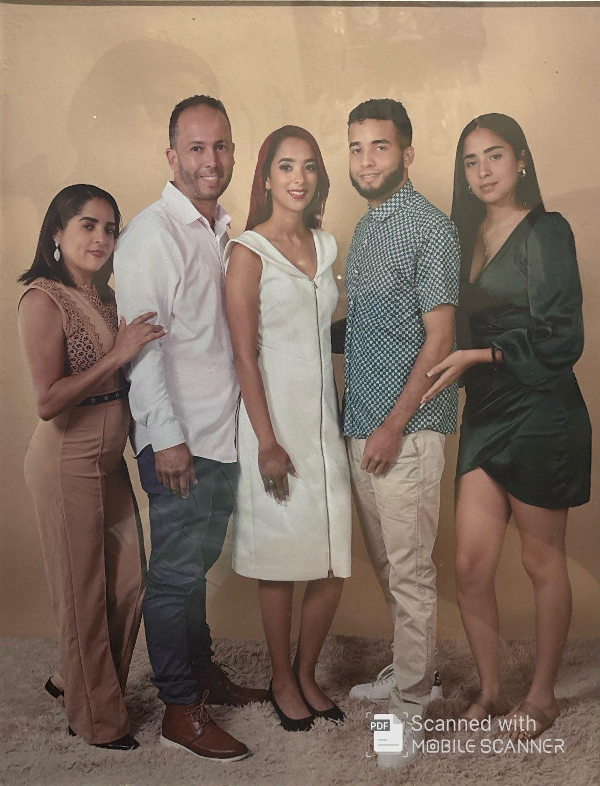

01 / ALIMENTACIÓN
Alimentos para compartir
Donaciones de comida, productos básicos y apoyo a familias que atraviesan dificultades.

Trabajamos para acercar apoyo, dignidad y nuevas oportunidades a personas y familias que necesitan una mano amiga.
Fundación Arias y Calidad de Vida es una iniciativa de asistencia social con raíces en Villa Trina, Moca. Su propósito es apoyar a personas y familias acercando recursos y oportunidades que contribuyan a su bienestar y calidad de vida.
Su labor contempla donaciones de alimentos, equipos de apoyo y movilidad, artículos para niños, ropa y otros productos básicos. Cada colaboración busca responder con respeto a necesidades reales.
La fundación trabaja desde 2016 y fue legalizada como organización sin fines de lucro en 2022.
Conoce a nuestro CEO →Acercar recursos y apoyo a quienes más lo necesitan, promoviendo una mejor calidad de vida con empatía, respeto y colaboración.
La asistencia puede tomar muchas formas. Estas son algunas de las áreas de apoyo que la fundación busca acercar a la comunidad.
Donaciones de comida, productos básicos y apoyo a familias que atraviesan dificultades.
Máquinas de oxígeno, aspiradoras de secreciones, camas y otros equipos de apoyo.
Sillas de ruedas, muletas, bastones, andadores y artículos de asistencia.
Juguetes, ropa, alimentos y artículos que acompañan a niños y familias.
Ropa, calzado, productos de higiene y artículos esenciales para el hogar.
Productos nutricionales como Ensure y otros apoyos según las necesidades y orientación profesional.
Las ayudas médicas y nutricionales están sujetas a disponibilidad, evaluación y normas sanitarias. La fundación no sustituye la orientación de profesionales de salud.
Una donación puede convertirse en alimento, movilidad, apoyo para el cuidado o una alegría para un niño. Cada aporte cuenta.
Sé parte del cambio →

Además de dirigir Fundación Arias y Calidad de Vida, Roberto Raúl Arias Ramos ha construido una trayectoria de trabajo y servicio en Villa Trina, Moca, tanto en el comercio como en el cuerpo de bomberos.
Reconocimiento Mocano del Año 2025
Un reconocimiento recibido durante Expo Moca 2025 y motivo de orgullo
para la comunidad.

Comerciante y propietario de Repuestos y Gomera Arias.

Bombero con una trayectoria de servicio y compromiso comunitario.

Roberto y María Victoria han formado una familia que combina servicio, educación y vocaciones diversas. Cada integrante aporta su propio camino y una mirada de esperanza hacia el futuro.
Esposo y padre; comerciante y bombero.
Esposa y madre de la familia.
Hija mayor, graduada en Psicología Educativa.
Hijo del medio, estudiante de Medicina.
Hija menor, recién graduada de bachiller y aspirante a Ingeniería de Software.
Hay muchas maneras de colaborar. Puedes aportar artículos, equipos, alimentos o conectar a la fundación con personas e instituciones dispuestas a ayudar.
¿Quieres enviar dinero? Solicita los datos oficiales de la cuenta bancaria antes de realizar la transferencia.
Solicitar datos para transferencia bancaria ↗Cuéntanos qué puedes aportar y el equipo podrá orientarte sobre los próximos pasos.
¿Quieres colaborar, conocer nuestra labor o consultar sobre una solicitud de ayuda? Ponte en contacto con la fundación.
Distrito Municipal José Contreras
Provincia Espaillat, República Dominicana
Por favor, utiliza las llamadas solo en caso de emergencia.
Llamar por emergencia →Para consultas y colaboraciones, escríbenos por WhatsApp durante el horario de atención.
Contactar por WhatsApp ↗Domingos no laborables, excepto emergencias graves.
No se reciben llamadas, salvo en caso de emergencia.